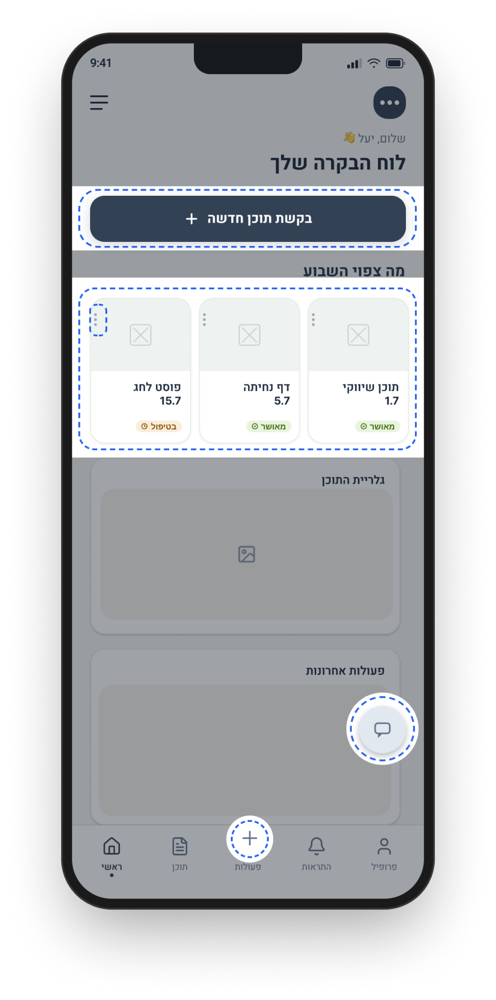
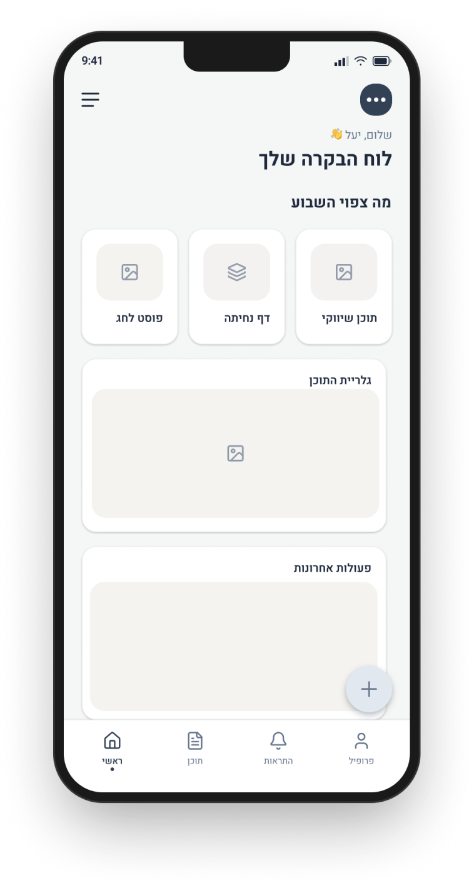
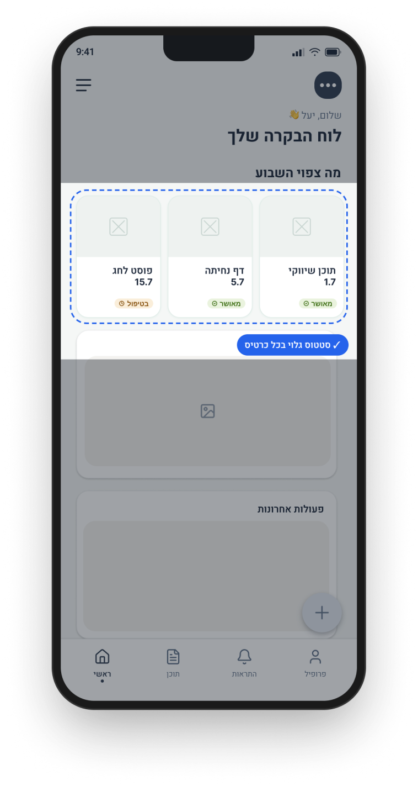
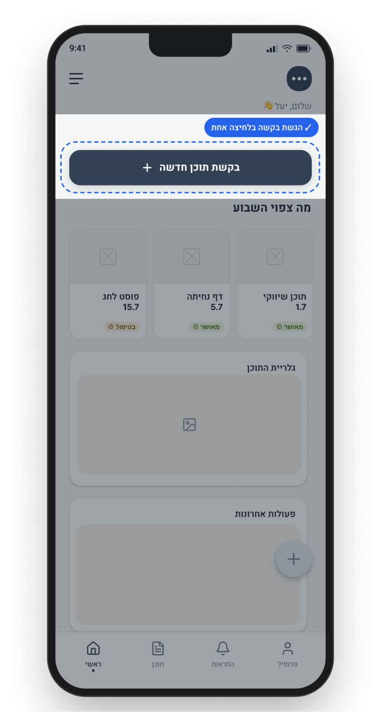
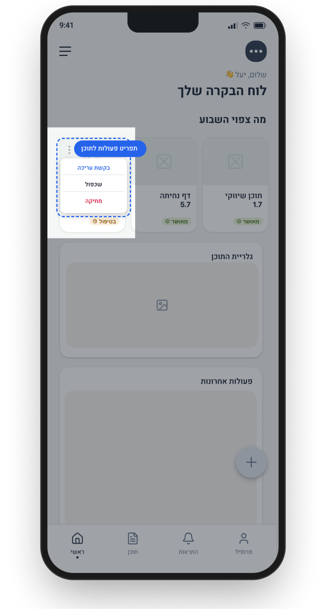
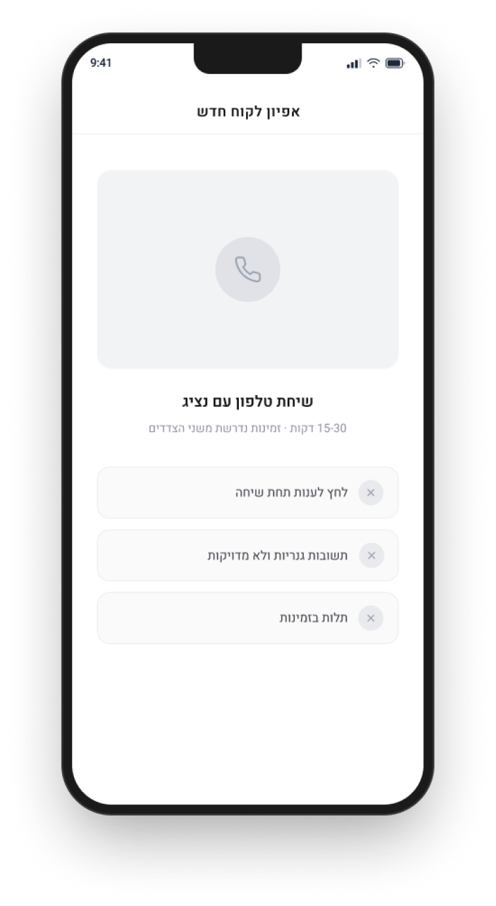
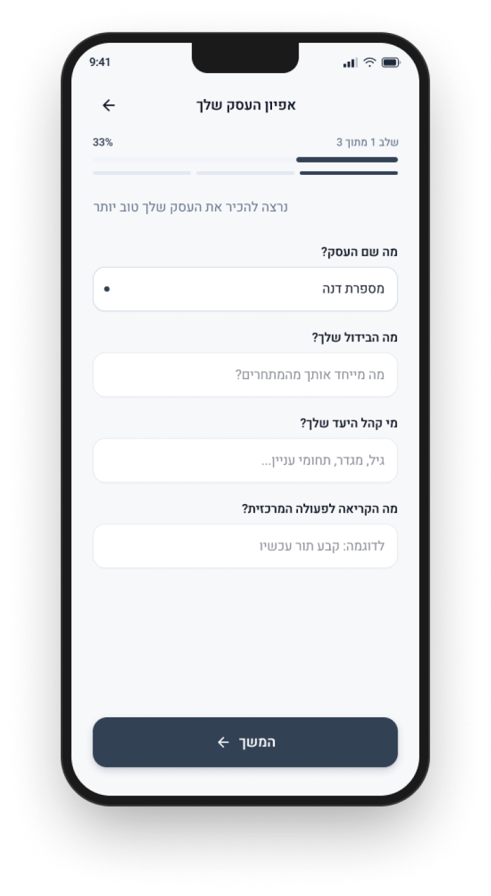
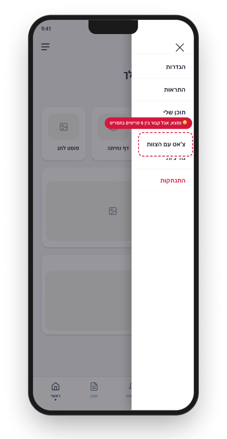
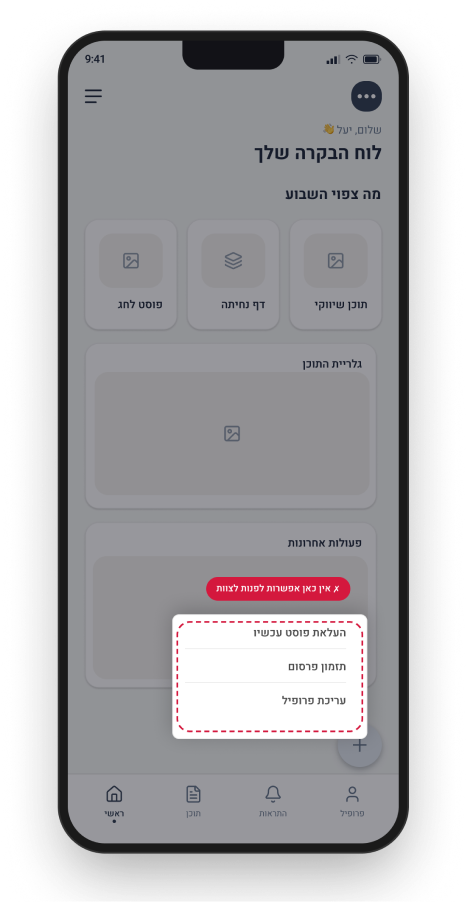
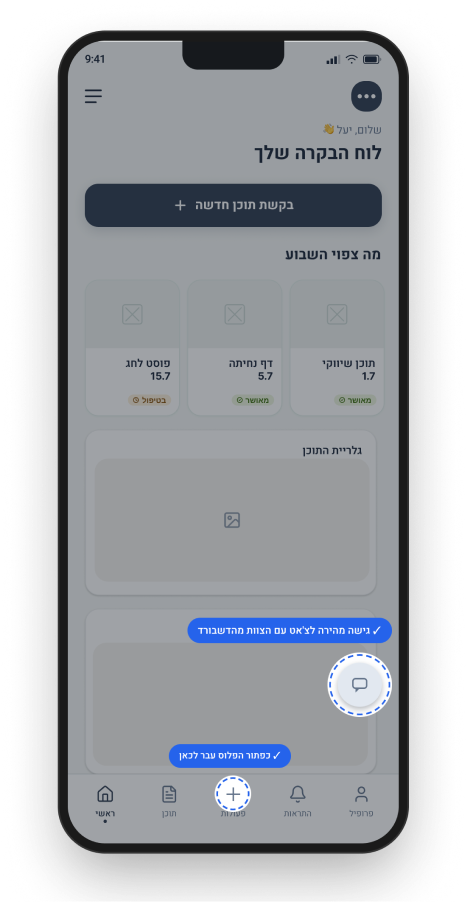

פלטפורמת שיווק דיגיטלי B2B - זיהוי נקודות חיכוך ושיפור חוויית משתמש
לקוחות עקפו את מערכת ה-SaaS ופנו ישירות לצוות הקריאייטיב - כי לא ידעו לעקוב אחר סטטוס בקשות, לא מצאו איך להגיש בקשת תוכן חדשה ולא ידעו איך לתקשר עם הצוות במערכת. זיהיתי את נקודות החיכוך והובלתי ארבעה פתרונות מוצריים.
פתיחת קובץ הפרויקט בפיגמהזיהוי נקודות חיכוך ושיפור חוויית משתמש
פלטפורמת שיווק דיגיטלי לעסקים קטנים ובינוניים. זיהוי דפוסי לקוחות שעוקפים את המערכת ופתרונות שהורידו חיכוך ושיפרו את חוויית המשתמש.
התפקיד
במסגרת תפקידי בסטארטאפ B2B היתי ב-Creative וגם Customer Success. במסגרת CS זה התבטא בעבודה היומיומית עם הפלטפורה עבור המנויים, כמו עזרה עם הממשק, הדרכות שימוש בו, ליווי מנויים חדשים ועוד, ניתחתי שיחות לקוחות, פניות תמיכה והדרכות לייב כדי לאתר נקודות חיכוך אצל בעלי עסקים קטנים ובינוניים. הבנייה הטכנית עצמה בוצעה על ידי צוות הפיתוח. לצד זה גם יצרתי תוכן ויזואלי לעסקים בתחומים השונים, החל מעולמות יופי וסלף קר, רופאים, מאמנים ומטפלים, עורכי דין ועוד. התוכן יועד לפלטפורמות דיגיטל וכלל פוסטים, דפי נחיתה ואתרי תדמית. קייס סטאדי כאן נוגע בנקודות הכאב ופתרונות שבלטו אצל המנויים בשימוש השוטף במערכת.
שיחות אפיון
שיחת אפיון עסק עם לקוח כדי לבסס חשיבה על התאמת המסרים
הדרכות לייב
חשפו בזמן אמת איפה לקוחות נתקעים
פניות נכנסות
חשפו דפוסים חוזרים: אותן שאלות, אותם תסכולים
לקוחות עקפו את המערכת
במקום להשתמש בפלטפורמה, הם עקפו אותה, מה שיצר עומס מיותר על הצוות ופגע בחוויית המשתמש.
בסביבת סטארטאפ מהירת קצב, בחרתי בגישה קלה ומבוססת דאטה אמיתי במקום תהליך פורמלי של מיפוי מסע משתמש או וויירפריים מסודרים. זיהיתי דפוסים חוזרים ישירות משיחות ופניות לקוחות, וניסחתי כיוון פתרון בטקסט שנבדק בשיחה עם צוות הפיתוח לפני שהתקדמתי הלאה.
ההיגיון המנחה היה עקבי לאורך כל הפתרונות. ברוב המקרים לקוחות לא עקפו את המערכת כי העדיפו כלים אחרים, אלא כי המערכת לא נתנה להם תשובה גלויה או נגישה מספיק. לכן כל פתרון נבדק קודם כל מול השאלה הזו: האם הוא משאיר את הלקוח בתוך הממשק במקום לדחוף אותו החוצה.
ההחלטות גם המשיכו להתעדכן מול תגובת המשתמשים בפועל. כפתור בקשת התוכן, למשל, נבחן עם המנויים לאחר ההשקה, ולפי הפידבק שהתקבל, כי התהליך ארוך מדי הוא יועל בהמשך לזרימה פשוטה וקצרה יותר.
כל פתרון טופל בנפרד בהתאם למצב באותו זמן ולא תוכנן מראש כמקשה אחת, אבל כולם נגזרו מאותה השערת עבודה.
זמינה בקובץ הפרויקט בפיגמה
כל השינויים במבט אחד
תקציר של הפתרונות. לפירוט מלא על כל אחד אפשר לגלול למטה.

✓ הגשת בקשה בלחיצה אחת ✓ סטטוס גלוי בכל כרטיס ✓ הגשת בקשת עריכה מתוך כרטיסיית התוכן ○ כפתור הפלוס עבר לכאן ○ גישה מהירה לצ'אט עם הצוות מהדשבורדהלקוח לא פנה כי לא הבין. הוא פנה כי לא ראה
לקוחות לא ידעו מה קורה עם הבקשה שהגישו לצוות הקריאטיב, וחוסר השקיפות הזה יצר חרדה ופניות חוזרות לצוות CS. נוספה תצוגת סטטוס ברורה בממשק עצמו.


דפוס הפניות החוזר בנושא סטטוס הבקשה ירד בכ-20% לאחר ההטמעה.
כשהדרך לפעולה ארוכה מדי, המשתמש מתייאש
הבעיה: לא היתה קיימת אפשרות להגיש בקשה חדשה דרך הממשק, רק בקשת עריכה עבור תוכן קיים שנבחר מתוך הגלריה. מנויים שרצו תוכן חדש לגמרי פנו בוואטסאפ, מה שיצר עומס על צוות ה-CS, הוסיף תחנה מיותרת לפני שהפנייה הגיעה לצוות הקריאטיב, והיווה בשלב מסויים כ-40% מהפניות הנכנסות.
הפתרון: נוסף כפתור ראשי ובולט בדשבורד לבקשת תוכן באופן דיגיטלי ועצמאי. כל מנוי יכול לבצע את הפעולה בקלות, מה שהפך אותם לעצמאיים ובטוחים יותר בממשק והוריד את העומס מהצוות. בנוסף, נוספה אפשרות מהירה להגיש בקשת עריכה ישירות מתוך התוכן עצמו, במקום דרך כפתור ה"עזרה" הלא אינטואיטיבי, מה שצמצם גם את הפניות בנושא זה שהיו עוברות בוואטסאפ.
בהמשך: בעקבות פידבק ממנויים שהתהליך ארוך ומסורבל, הוא יועל לזרימה פשוטה וקצרה יותר.
בקשת תוכן חדש לגמרי
בממשק יש "עריכה" כק מתוכן שקיים בגלריה
פניה בוואטסאפ
CS ניתוב הפנייה ל
העברה לצוות קריאטיב
כניסה לתוכן קיים בגלריה
לחיצה על כפתור עזרה
פנייה לצוות קריאטיב
כתיבת בקשה + תמונות
שליחה לצוות


בחודש שבו הוטמע כפתור ישיר להגשת בקשה, כ-13% מהמנויים הגיבו לפעולה.
שאלות על זהות עסקית דורשות מחשבה, לא תגובה מהירה
תהליך האפיון הראשוני כלל שאלות מורכבות על קול המותג ובידול, ודרש שיחה של 15-30 דקות, שהיתה תלויה בזמינות ופניות הלקוח ולכן קיבלנו תשובות שטחיות. מה שפגע ביצירת תוכן מדויק, יצר שיחות נשנות עם המנויים והעריך את תהליך העבודה וגם תסכל. לאחר מחקר משתמשים עם מנויים, המרתי את התהליך לטופס דיגיטלי שהלקוח ממלא אחרי שהוא מצטרף למנוי, וכל האינפו נשמר בפרופיל שלו.


המעבר לטופס יצר סלקציה טבעית: רוב הלקוחות השלימו את התהליך באופן עצמאי, ופינו לצוות זמן להתמקד במי שנדרשה לו שיחת אפיון מעמיקה יותר.
הלקוחות השתמשו במה שמוכר ובטוח. הם לא מצאו את הצ'אט של הממשק
הצ'אט הפנימי היה קיים, אבל אף אחד לא ראה אותו, כיון שהיה בתפריט נסתר, לקוחות פנו בוואטסאפ כי זה מה שהכירו. כדי שהלקוחות יתנהלו בממשק הצעתי להעביר את הגישה לצ'אט למיקום בולט ומוכר. הבחירה במיקום צף נבעה מכך שזו התנהגות משתמש מוכרת מממשקים אחרים. לא היה צורך ללמד את המשתמש דפוס חדש, אלא להסתמך על תהליך אינטואיטיבי שהוא כבר מכיר, נהוג ומוכר.



המטרה: לעודד לקוחות להישאר בתוך הממשק במקום לעבור לוואטסאפ, עם תיעוד מלא והמשכיות טובה יותר לצוות.
המכנה המשותף לכל הפתרונות
חלק מהפתרונות יושמו בפועל. פתרונות אחרים נמצאים בתיעדוף במפת הדרכים של המוצר. מסך הבית היחיד שתוכנן פתר בו-זמנית 3 מתוך 4 הבעיות שזוהו (סטטוס בקשה, יצירת בקשה חדשה ופנייה לצוות), הדגמה לכך שפתרון אחד ממוקד יכול להחליף כמה תיקונים נפרדים.
פחות פניות חוזרות
הורדת עומס מצוות ה-cs על ידי מתן מידע ישיר בממשק
אפיון מדויק יותר
טופס דיגיטלי הניב תשובות עמוקות ותוכן שיווקי אמיתי
תקשורת בכלים הנכונים
הפחתת תקשורת מחוץ למערכת וחזרה לכלים שנבנו לכך
כל פתרון נשען על דאטה אמיתי שנאסף מהשטח. הגישה הישירה ללקוח היא נקודת המוצא הנכונה לכל שיפור בחוויית המשתמש.